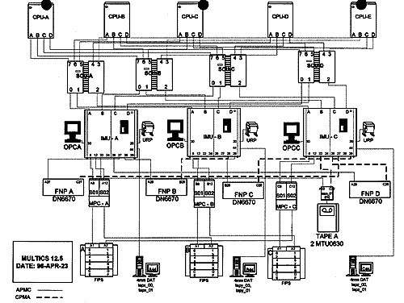

Loading
Canadian Department of National Defence
Location
Maritime Command HQ
DND Marlant
P.O. Box 99000 Stn Forces
Halifax, Nova Scotia, Canada
B3K 5X5
First Installed
Dual L68 installed in 1982.
Upgraded to triple 8-70M in 1985.
Fourth CPU added in 1988.
Fifth CPU, fourth SCU, IMUs instead of IOMs, FIPS disk added in 1993.
Final Shutdown
17:08Z 30 Oct 2000 -- The Last Site
Configuration
[Dave Green] The picture below is the last drawing I had of the system. There may have been some changes after this one, however it does show the DAT tape subsystems that we configured in, as well as FNP-D which I had almost forgotten about. Each DAT Subsystem had two DAT drives in the box. FNP-D did not have a full complement of lines and was used (when I was there) for mini-system testing and some other weird testing of communications.
As well this drawing does not show the connections between the FNPs to HP DTCs which were used to network the lines to UNIX comms and graphics systems. (Click for a larger view.)

People
Honeywell Support
- Wallace Halladay, Marketing Ed
- Bob Grimes
- Olin Sibert
- David Stone
- Tony Taylor (Field Engineer)
- Gary Cross (Field Engineer)
Management
- Account manager: Gerry Hills
- Responsible Exec (Wang): John Potts
Site Analysts
- R. Barry Walker (Navy CIO)
- Stan Cox (MRDS expert)
- Dave Green
- David Schroth (ACTC)
System Administrators
- R. Barry Walker
- Dave Green
- Brian Morell
Other Multicians
- John McLeod, application support
- Norm Powroz (HLSUA Multics committee)
- Alan Haggett (Y2K changes, troubleshooting, FIPS tape)
- Jim Forsythe (SysMaint) [spelling? e on end or not]
- Bruce Wilkie
Application Areas
Maritime Command Operations Information Network (MCOIN)
[R. Barry Walker] Multics served as the hub of the Canadian navy's operational command and control system and was used extensively in military operations including the Gulf War and in humanitarian support operations such as the recovery of SwissAir 111.
[Marlene Corey] I would have to say that one of the most notable things I was involved with was MULTICS MCOIN software that allowed us to feed UNIX servers, including a web server located on a Novell LAN with Military messaging and intelligence data. Alan Haggett, a first class Multician, actually wrote the interface. In fact using terminal emulation on a network our users connected to MULTICS via a DTC. To our users, the mainframe was just another server so the migration to a Client- Server environment was relatively painless for them.
[R. Barry Walker] For about 5 years, the system was also used to support the DND Ship Repair Unit. This involved running workload simulations for major overhauls of submarines and other vessels as well as work cost accounting etc. The conflict for resources on the system led us to become experts in work class management to ensure that the C2 stuff got priority when needed, but allowed the background simulations to complete in a reasonable time. In time, the SRU applications were moved to VAX clusters, allowing us to reclaim large amounts of disk storage and CPU time.
Notable Developments
GIS Database
[R. Barry Walker] We did a number of neat things including creating a replicated database between MRDS and a set of small Unix machines which were used to drive geographic information systems. Users on the GIS boxes logged in through a special process overseer which set up a regular poll of MRDS and transmitted database changes down to the GIS. My major contribution (apart from overall architecture, system support, etc) was to write an interceptor for MRDS calls to capture each and every database operation. This gave us an audit history and allowed us to rebuild the database simply by replaying all transactions after a known backup. I think I only discovered one bug in that code when I came up against something that aligned to a double word boundary and I accidentally unaligned it in the capture file!
Terminal Network
[Dave Green] One of the "fun" things that we did in order to add more accessibility of the system was to connect the ports of the FNPs to HP DTCs (I'm not sure of the acronym but it was a terminal line multiplexer) which were connected to the network. That way a user could pop a terminal emulator on a UNIX system and log into Multics. Of course our applications wanted to see a VIP7800 terminal which meant we had to develop our own VIP7800 Terminal Emulator on UNIX. Mr. Allan Haggett was instrumental here in taking a hack we found somewhere and crufting it into a usable VIP7800 emulator.
IOM Reconfiguration
[R. Barry Walker] Probably the most significant item from a Multics point of view was the requirement for IOM reconfiguration. Multics was sold as being totally reconfigurable, and when we first tried to delete an IOM, the system crashed. Digging through the contract info, we realized that the Honeywell proposal said that we could delete any or all components. Hence the work in MR11.0 to move the bootload IOM etc (add_iom, delete_iom etc) was done so that DND did not void the entire contract. I think we had a prototype of this in MR10.2 to get past the time limit specified in the contract.
[David Schroth] The IOM reconfig functionality was something that came about as a result of the early sales campaign (before I joined HIS Ottawa in 1982) which may been targeting the W... system modified for DND. That was based on GCOS with IOM dynamic reconfiguration (except for bootload IOM). I remember attending a meeting with a DCSEM Engineer (Ken Sparks?) in Ottawa to discuss outstanding issues at which we (HIS) were required to prove IOM reconfig. Following this meeting, Swan Tan and I spent two weeks in Phoenix at the benchmark centre (graveyard shift only, 23:00 to 07:00) developing a manual reconfiguration scenario and script to demonstrate that the hardware was capable and that software changes could bring the functionality to the system in a safe form. I remember a few really interesting crashes getting it right. We demonstrated the hardware capability to the project authority in Phoenix and then redid it Halifax about a month later as part of phase D of final acceptance testing (discrepancy resolution). I remember being in the MCOIN machine room at 02:00 doing a dry run when the room went dark and silent; a cat had taken roost on a transformer and knocked out the power to that area of Halifax. This was prior to the site going operational so there was no UPS.
Anecdotes
The Site
[R. Barry Walker] The site ran multi-level secure. Most of the application development was done at the unclassified level (Level 0). We had originally planned to name the levels as "Unclassifed", "Confidential", "Secret" etc. but for various reasons scrapped that plan, and stuck with level numbers. The command and control applications ran at Level 4. We didn't use categories although we needed them. The lack of efficient ways of getting across a category boundary for common information made it just too hard to deal with them.
[Marlene Corey] The majority of our software developers were PL1/FORTRAN/Assembler programmers (I never did program in COBOL and neither did any of my current staff). The system ran 2 levels of security, Unclassified (most development was done there) and Secret (where production systems were run). According to Alan Haggett we ran the largest Multics site but he can probably provide more details. In fact I think he has our final console log.
[John Potts] I was the Bell Multics OS tech at Don Mills, I installed the HW and worked on site for 2 years. Many years later I ended up a manager in Wang Canada and the president Bob Lerner allocated me as the "exec of accountability" for DND. They were surprised on my first trip to Halifax when I announced I was a Multician (HW). Remember Dave Green and Allan H. Had many an entertaining evening with the IT team.. trying to remember the IT manager that Dave reported to.
Y2K Modifications
[R. Barry Walker] Most of the work required was to modify applications written by former COBOL programmers who insisted in stuffing "19" into dates. As for Multics itself, we had to remove the sanity check in bootload_multics_.pl1 (the one that says it's not reasonable to start this system after 1999), and I think we modified the default calendar window to assume 2 digit years are in the timeframe of 1980 to 2079.
[Marlene Corey] The Y2K changes were not a result of COBOL programmers as suggested by Barry. The changes were made to accommodate Military DTGs which did not carry the year. The rest of the changes were to do with wake up alert settings, etc., and intelligence reports all of them with a DDHHMMZ time provided and the programmer had to assume a year in order to call the convert date routine since all of our times were stored in fixed bin (71) format on our MRDS Databases (I think that was pretty smart).
Tape Cartridge Drives
[Dave Green] I forgot to mention that the old reel-to-reel tape drives were switched out with a cartridge tapes system in 1998???. This was a custom designed system designed and implemented by Allan Haggett, Olin Sibert, and Jim Homan. This tape system used a WANG PC interfaced to SCSI DAT drives. There was an EISA card in the box as well that interfaced to the FIPS interface on the IMUs. Allan Haggett can fill you in on the dirty details (if you can reach him) but there was almost a show stopper during the project when it was discovered that Honeywell(Bull-Wang etc) had not fully implemented the FIPS interface. They only implemented what was necessary for the FIPS disk drives. Haggett and Sibert "invented" a weird handshake scheme using the unfinished FIPS protocol and made it work. Basically it gave us the capability to do Multics backups to 4mm DAT tape. We configured three of these subsystems... one on each IMU and did all the backups that way from then on. Several of the 6250bpi MTU630 tape drives were kept for booting and accessing legacy tape data. I forgot how much fun we really had on that system.
System Upgrade
[Dave Green] I was the project manager for the system upgrade in February-June 1993 which added 3 IMUs replacing the IOMs, an additional CPU, an additional SCU and 3 strings of FIPS drives. I also (with the assistance of Mr. Lacy Johnson and Ward Anderson) upgraded the Multics from MR11.0 to MR12.5. It was a hell of a 5 months (conversion and testing with mini systems while keeping the main system running) but successful in the end and it worked right away! I was just going over the schedule I wrote up for the actual cutover - I must have been smart then.
Funny message
[Dave Green] One error message that always amused me was:
ring0_derail: .... multics not in operation
Alan Haggett and I used to often use the "ring0_derail" notation to describe a person showing braindead qualities or situation that warranted getting away from.
Shoeshine
[Dave Green] I also remember Lacy Johnson trying to polish his shoes at about 2am during the MR12.5 upgrade and the polish bottle springing a leak all over the floor.
Multicians Everywhere
[John Potts] While at Wang (which acquired Honeywell - Bull), I was executive of accountability for the Canadian Navy Multics system at Halifax which was eventually upgraded to a NEC system. I visited once a month. They were surprised on my first trip to Halifax when I announced I was a Multician (HW).
Thanks to R. Barry Walker, David Schroth, Dave Green, Jim Corey, Marlene Corey, and John Potts for info.